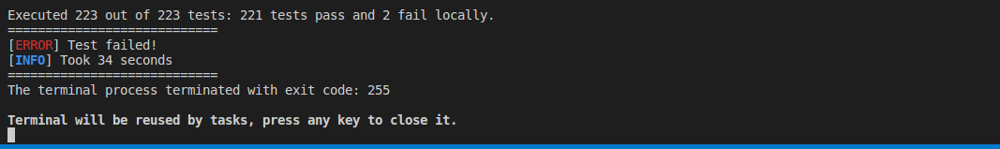

How to Build and Release your Docker Container
Install Docker
Please follow the Apollo Software Installation Guide.
Build Apollo
Start container
We provide a build image named dev-latest. The Container will mount your local apollo repo to /apollo.
bash docker/scripts/dev_start.sh
Get into the container
bash docker/scripts/dev_into.sh
Build modules
bash apollo.sh build
Note: If you do not have a GPU, you can use the following script instead
bash apollo.sh build_cpu
Note: If your computer is very slow, you can enter the following command to limit the CPU.
bash apollo.sh build --local_resources 2048,1.0,1.0
What's next
- If at this point, you do not have a vehicle setup or you want to confirm that Apollo has been built out correctly, please continue to How to Launch and Run Apollo
- If you do have a vehicle setup, please continue back to our Software Installation guide
Build in Visual Studio Code
Install VSCode
The easiest way to install for Debian/Ubuntu based distributions is to download from https://code.visualstudio.com and install the .deb package (64-bit) either through the graphical software center if it's available or through the command line with:
sudo dpkg -i <file>.deb
sudo apt-get install -f # Install dependencies
Start VSCode
Start VSCode with the following command:
code
Open the Apollo project in VSCode
Use the keyboard shortcut (Ctrl+K Ctrl+O) to open the Apollo project.
Build the Apollo project in VSCode
Use the keyboard shortcut (Ctrl+Shift+B) to build the Apollo project.
Run all unit tests for the Apollo project in VSCode
Select the "Tasks->Run Tasks..." menu command and click "run all unit tests for the apollo project" from a popup menu to check the code style for the Apollo project.
If you are currently developing on 16.04, you will get a build error. As seen in the image below, 2 perception tests. To avoid this build error, refer to the how to build Apollo using Ubuntu 16.

Run a code style check task for the Apollo project in VSCode
Select the "Tasks->Run Tasks..." menu command and click "code style check for the apollo project" from a popup menu to check the code style for the Apollo project.
Clean the Apollo project in VSCode
Select the "Tasks->Run Tasks..." menu command and click "clean the apollo project" from a popup menu to clean the Apollo project.
Change the building option
You can change the "build" option to another one such as "build_gpu" (refer to the "apollo.sh" file for details) in ".vscode/tasks.json"
Test
bash docker/scripts/release_start.sh [release tag]
The HMI will automatically start and you can control each apollo module through any web browser by inputting IP address and port number, such as localhost:8887. You can get into the release container if quick fix needed.
bash docker/scripts/release_into.sh
Legal Disclaimer
The docker image that you build may contain ESD CAN library files provided by ESD Electronics (hereby referred as ESD), which you should have obtained via a licensing agreement with ESD. The licensing agreement shall have granted you (as an individual or a business entity) the right to use the said software provided by ESD; however, you may (and likely you do) need explicit re-distribution permission from ESD to publish the docker image for any other third party to consume. Such licensing agreement is solely between you and ESD, and is not covered by the license terms of the Apollo project (see file LICENSE under Apollo top directory).